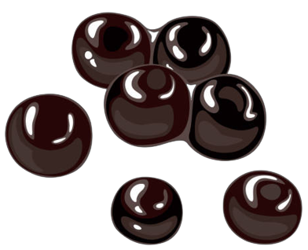

🧋Taro Milk Tea 🧋
"Sumérgete en un mundo de sabores exquisitos con nuestra receta de Boba de Taro casera. Esta indulgente y vibrante bebida se elabora con ingredientes de alta calidad y está cargada de la rica esencia del taro, una raíz morada que le brinda su distintivo color y sabor. Cada sorbo es una experiencia sensorial que combina la suavidad sedosa del taro con la diversión de las perlas de tapioca, creando una textura y un sabor que te cautivarán desde el primer momento."🧋
Para las perlas de tapioca:
- 1/2 taza de perlas de tapioca de taro (disponibles en tiendas asiáticas)
- Agua para cocinar las perlas
- 1/4 taza de azúcar
- Colorante de comida morado (opcional, para intensificar el color del taro)
Preparación de las perlas de tapioca:

Preparación del té de taro:
El té de taro:
- 2 cucharadas de polvo de taro (disponible en tiendas de té o asiáticas)
- 1 taza de agua caliente
- 2 cucharadas de azúcar (o al gusto)
- 1 bolsita de té negro (opcional, si prefieres el té)
- En una taza, mezcla el polvo de taro con agua caliente hasta que se disuelva por completo.
- Si deseas, puedes agregar la bolsita de té negro para un sabor más acentuado.
- Deja enfriar la mezcla de té y taro.
Para el montaje:
- Hielo
- Leche (puede ser leche regular o leche vegetal)
- Jarabe de taro (opcional, para más sabor)
Montaje de la bebida:
- Llena un vaso con hielo.
- Vierte el té de taro enfriado sobre el hielo, llenando aproximadamente 2/3 del vaso.
- Agrega leche hasta llenar el vaso, dejando espacio para las perlas y el jarabe (si lo estás usando).
- Agrega las perlas de tapioca de taro cocidas.
- Si deseas, agrega jarabe de taro para dar más sabor y dulzura a la bebida.
- Revuelve suavemente con una cuchara grande o una pajita ancha antes de disfrutar.